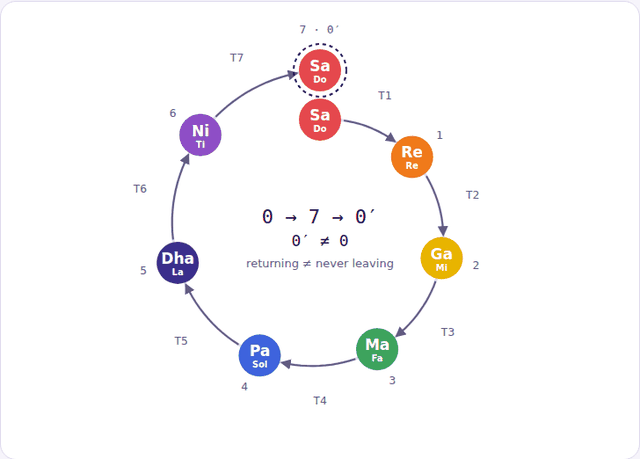
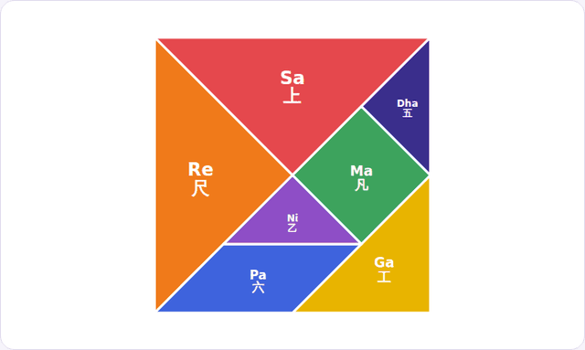
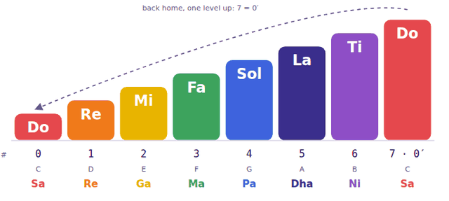
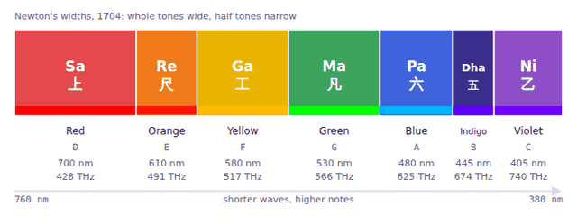
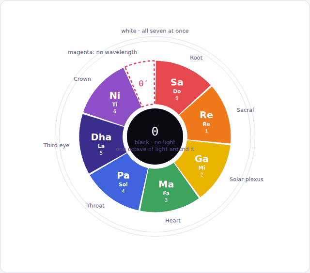
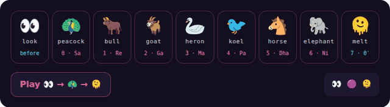
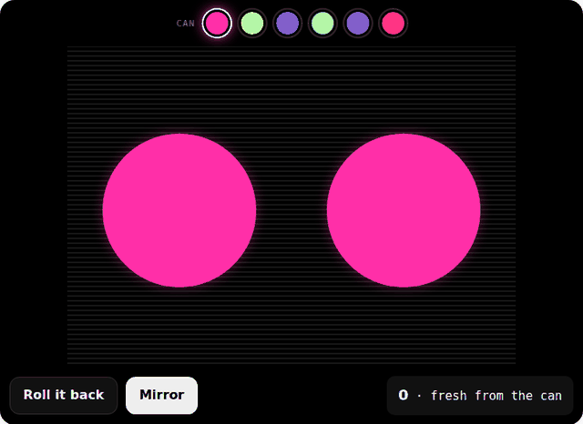

Scavenger hunt · clue diagrams
Seven notes, two languages, seven boards, seven colours, and one journey that comes back changed. Tap any step, piece or colour to hear it. Pick a voice, hold a drone, or press the play button under each diagram.
Sound
Everything on this page makes a sound. Choose the voice it is made in. The drone is Sa, Pa, Sa, the three strings of a tanpura: the note that does not move while the others climb.
On a keyboard, the number keys 1 to 8 play the eight notes. Down is the reversal question: the same arrows run backwards. Play 0 and 0′ together and you hear why they share a name and are not the same note.
Diagram 1
Each note is one step up. Count from zero and the eighth step, high Do, lands on 7. It has the same name as the Do you started on, but it is an octave higher. Same word, different state: that is 0′, not 0.
Row by row, under each step: its number counting from 0, the letter in C major, and its Sanskrit twin.
Diagram 2
Bend the staircase into a ring and the top step lands over the bottom one. High Do sounds like low Do, so the journey seems to end where it began. Look closer and it lands one level up. The second zero has climbed seven steps to get there.
The arrows carry the letter T. Each one is the step that turns one note into the next. Tap a note to hear it, and hear how the last one sounds like the first without being it.
Underneath the diagrams
This is the simplest way to explain it to someone seeing it cold.
with
0′ ≠ 0
These are not meanings. They are simply different observable states. 7 is no more special than 3.
Each arrow T is whatever causes one state to become another: heat, breath, pressure, movement, time, language, learning, decay, experience. So the theory studies transformation, not the numbers.
3 →T₄→ 4
What had to happen for state 3 to become state 4?
4 → 3
Can the transformation actually be reversed? Sometimes yes. Sometimes no.
The system eventually appears to return to where it started. But the second zero has a history. A piece of clay before and after firing cannot simply be returned to its original condition. A person after an experience may return to the same place but is not the same previous state. A breath can leave and another breath enter, but time has passed.
A thing is not only what it is. It is also how it became.
The scale is the smallest case. It takes seven arrows to come round, and the note it lands on sounds like Do because it is Do, an octave up. The tangram below is the case you can hold in your hands.
Diagram 3
A tangram has seven pieces and a scale has seven notes. Line the pieces up in order and you have the scale. Fit them together and they make one square: the whole set, the octave, home. Take the same seven pieces and build something else, and that is a tune. Bigger piece, lower note, the way bigger drums are lower.
Tap any piece to hear its note and see its name. Every time the pieces go out and come back, the square gets another prime. It is the same square. It has also been a boat. Play the picture reads the pieces where they lie, left to right and top to bottom, so the square, the row and the boat are three tunes from one set of notes.
Diagram 4
Three separate traditions landed on the same count. The Sanskrit names are centuries older. The European ones come from a Latin hymn used by Guido of Arezzo in 11th-century Italy. The seven boards come from China, and this page gives each board a note.
Guido's system had six notes. Si was added later, from Sancte Iohannes, then changed to Ti in English so each note starts with a different letter. Ut became Do because Do is easier to sing. The fractions are each board's share of the square.
Diagram 5
Tangram is the English name. In Chinese the puzzle is 七巧板, qīqiǎobǎn, three characters that say exactly what it is.
Huang Bosi, a scholar of the Northern Song, designs a set of rectangular tables and a book of diagrams, the Yanji tu, showing how to push them together in different ways to seat guests. The pieces are furniture, but the game is already there.
In the Ming dynasty Ge Shan publishes the Butterfly Table Diagrams: thirteen tables in six shapes of triangles and trapezoids, named because their angles look like wings.
A simpler set appears, cut from one square: two large triangles, one medium, two small, a square and a parallelogram. This is the puzzle as it is still made.
The earliest surviving tangram book, Qiqiao tu hebi (Complete Tangram Diagrams), is published by Bi Wu Jushi with diagrams by Sang Xia Ke.
Captain M. Donnaldson is given a pair of the books, one of problems and one of solutions, when his ship Trader calls at Canton. The ship reaches Philadelphia in February 1816 and the first American tangram book is copied from them.
The first Western book appears in London in March 1817. Within two years tangram books are printed in England, France, Switzerland, Italy, the Netherlands, Denmark, Germany and the United States.
Thomas Hill's Geometrical Puzzle for the Young holds the first known use of the English word tangram. Where he got it is not settled: perhaps Tang, the dynasty, plus the Greek -gram, or an old English word for an oddly contrived thing.
Fu Traing Wang and Chuan-Chih Hsiung prove that the seven pieces can make exactly thirteen convex shapes with no dents: one triangle, six four-sided figures, two pentagons and four hexagons. Everything else, the boat included, has a dent somewhere.
One more thing the pieces know about 0′. Six of them look the same in a mirror. The parallelogram does not, so some figures can only be built if you turn it over. Same piece, other side.
Diagram 6
Red is the lowest-frequency light we can see, violet the highest; Do is the lowest note, Ti the highest. Walk 0 → 6 and in both light and sound you are climbing in vibration. That rhyme is not an accident. When Isaac Newton split the spectrum in Opticks (1704) he had five colours and added two, orange and indigo, so that the count would match the seven notes of the scale. He then divided the spectrum by the same string lengths that give the notes, and he wrote that violet is red coming round again, the way a note comes round an octave up. Newton's rainbow is Diagram 2 in light.
Band widths are Newton's: red, yellow and green are the whole tones, orange and indigo the two half tones, which is why the two colours he added are the two narrow ones. Newton started his scale on D. This page starts it on Do. Tap a band to hear its note. The seven colours on this page are the light itself, not paint: each is the wavelength shown, converted with the CIE 1931 standard observer to sRGB, clipped to what a screen can show and set to full brightness. A screen cannot make 700 nm red or 405 nm violet exactly; these are the nearest it has.
Three colours are missing from the rainbow, and between them they are the whole equation. Black is no light at all: the centre of the wheel, nothing has happened yet, 0. White is all seven at once, the ring around the outside: the octave sounding together, the square with every piece in it. And past violet is ultraviolet, which no eye can see. Red doubled is 860 THz, real and invisible. Yet the wheel closes: violet comes back round to red through magenta, a colour with no wavelength that the brain invents to join the two ends. The colour that returns you to red was never in the rainbow at all. Magenta is 0′ ≠ 0.
The whole visible spectrum, 380 to 750 nm, is a frequency ratio of just under 2 to 1. The eye sees about one octave. The ear hears ten.
| # | Colour | Note | Light | Chakra | What it carries |
|---|
Tap a band or a wedge to hear its note; tap the black centre for silence and the white ring for all eight notes at once. The chakra pairings follow the common seven-chakra convention; the meanings are the ones the colours carry in Nepal and India, where the notes are Sa Re Ga. The rainbow on the chakras, red at the root and violet at the crown, is younger than it looks: it was set out in California in 1977 in Christopher Hills's Nuclear Evolution and spread from there. The older Indian text on the notes, the Nāradīya Śikṣā, gives each svara an animal rather than a colour: Sa the peacock, Re the bull, Ga the goat, Ma the heron, Pa the koel, Dha the horse, Ni the elephant. And China's oldest colour system counts five, not seven: 青 qīng blue-green, 赤 chì red, 黄 huáng yellow, 白 bái white, 黑 hēi black, one for each element. Seven notes, seven boards, seven colours, five colours. The count is a choice, and Newton made his to fit the music.
Diagram 7
The seven notes as the seven animals the Nāradīya Śikṣā gave them, with two eyes before the first and a melt after the last. Tap one to hear it.
👀 🟣 🫠
Heron has no emoji; the swan stands in. The eyes and the melting face are two of the three glyphs of The Purple Durian; the third, 🟣, is the whole set at once.
Diagram 8
Fired clay cannot go back. Play-Doh can. Press it and it stays pressed. Roll it back into a ball and it is a ball again, with every fingerprint still under the surface. Each press sounds the note under your finger, left to right, Do to high Do.
The colours are the ones scanned on a flatbed for Pretty Child (2016 to 2017): neon Play-Doh on black, magenta, acid yellow, blue, mint, violet, and the red that held two green ping-pong balls. Every frame of that film was mirrored down the middle, so the mirror is on by default. On a keyboard, press 1 to 8 to dent the ball where that note lives.
Moving pictures
Seven of the diagrams, recorded as they move, for the post and the hunt. Press and hold one on a phone to save it. They are silent: the sound stays on this page.







Sources: Wikipedia, “Solfège” and “Tangram”; chinesepuzzles.org, “Tangram Puzzle”; British Library, Asian and African studies blog, “A popular Chinese game: the Qi Qiao Tu, or Tangram” (2014); Wang and Hsiung, “A Theorem on the Tangram,” American Mathematical Monthly 49 (1942); Let’s Play Kids Music, “Do Re Mi – Fun Introduction to Musical Theory for Kids”; Isaac Newton, Opticks (1704), Book I, and Wikipedia, “Color wheel” and “Spectral color”; Science Notes, “Visible Light Spectrum Wavelengths and Colors”; the seven colours computed from the CIE 1931 2° colour-matching functions (table values at 700, 590, 575, 530, 470, 445 and 405 nm) through the sRGB D65 matrix, negative channels clipped, then normalised; Christopher Hills, Nuclear Evolution (1977), as reported by Subtle Yoga and chakratraining.com; Nāradīya Śikṣā, via sreenivasarao’s blogs. Sargam shown in its natural (shuddha) form, which lines up with the major scale. The equation is Joey’s, in his words. Black as 0 was Joey’s answer to Clue 4. Diagram 7: the animals from the Nāradīya Śikṣā as above; the three glyphs 👀 🟣 🫠 and the rule “just basic words and emoji, more emoji” from Joey’s own house-style notes (Words.md, 2026). Diagram 8: colours and the mirror rule from the Pretty Child archive reading (pretty-child-findings.md, 1 September 2026), which describes the flatbed scans of neon Play-Doh and notes that every frame of the film is bilaterally mirrored.